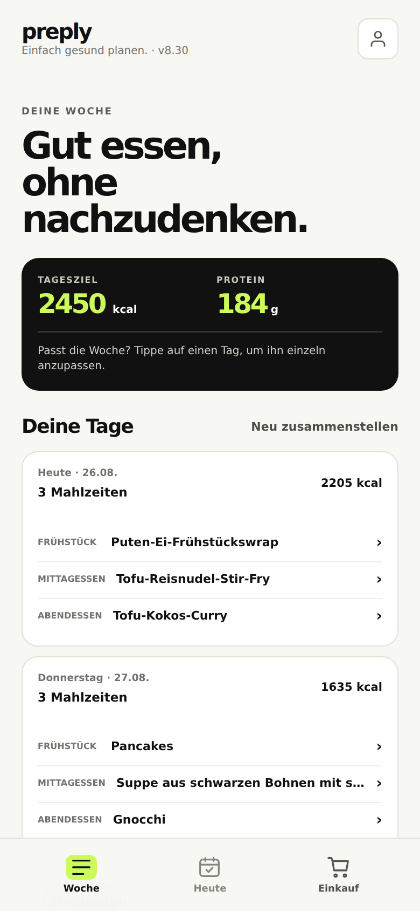
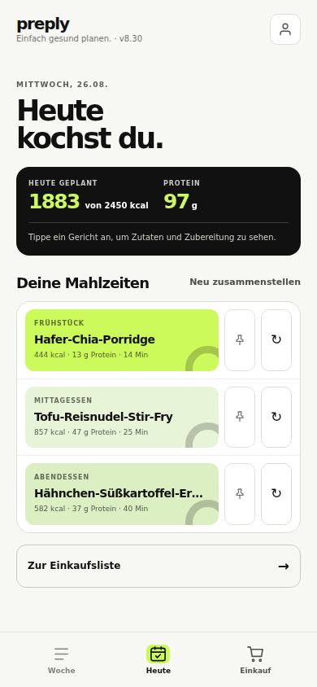
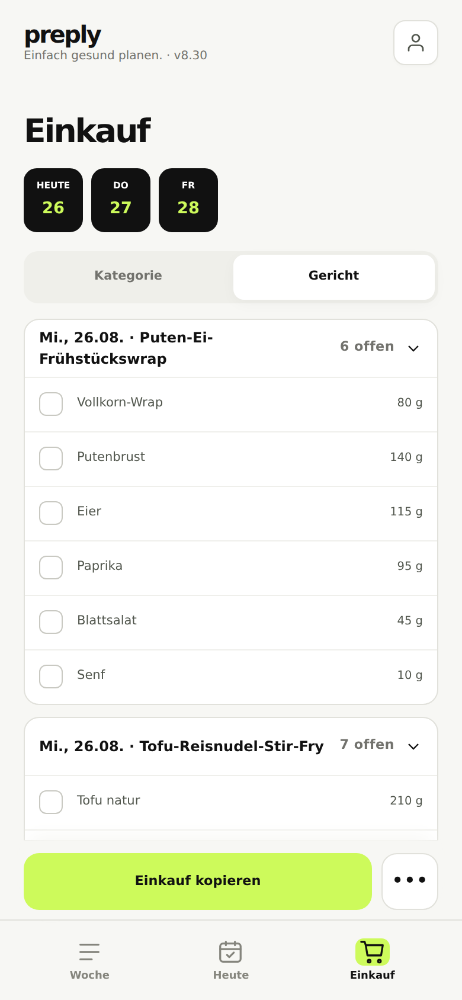

Essensplaner
Preply stellt dir eine Woche Essen zusammen, die zu deinem Bedarf passt — und macht daraus die Liste für den Supermarkt.
Läuft im Browser. Nichts zu installieren, kein Konto nötig.



Keine Ernährungstagebücher, keine Punkte, kein Wiegen. Du beantwortest einmal, wer du bist und was du magst — den Rest übernimmt die App.
Größe, Gewicht, Alter, Bewegung, Ziel. Daraus wird dein tatsächlicher Kalorien- und Proteinbedarf berechnet — keine Schätzung, die du selbst eintippst.
Frühstück, Mittag und Abend für jeden Tag, passend zu deiner Ernährungsweise, deinen Allergien und der Zeit, die du zum Kochen hast.
Die Einkaufsliste entsteht von selbst — sortiert nach Regal oder nach Gericht, zum Abhaken im Laden. Die meisten Rezepte führen dich Schritt für Schritt durchs Kochen.
Die Idee ist dieselbe: du musst dir nicht überlegen, was es gibt. Der Unterschied ist, dass dir niemand Zutaten in Einzelportionen nach Hause fährt — du gehst mit einer fertigen Liste in den Laden, in dem du sowieso einkaufst.
Der Grundumsatz kommt aus der Mifflin-St-Jeor-Formel, dazu dein Bewegungsniveau und dein Ziel. Die App zeigt dir den Rechenweg, statt dir eine Zahl vorzusetzen.
Ob ein Gericht Nüsse, Ei oder Fisch enthält, wird an der Zutatenliste geprüft — nicht nur an dem, was im Etikett steht. Was du ausschließt, kommt nicht in den Plan.
Nach Regal sortiert, wenn du den ganzen Wocheneinkauf machst. Nach Gericht, wenn du heute nur für ein Essen einkaufst. Beide zum Abhaken.
Kein Bock auf das Curry? Ein Tipp, ein anderes Gericht — Plan und Einkaufsliste ziehen sofort nach. Gerichte, die bleiben sollen, kannst du anpinnen.
Zu aufwendig, zu teuer, zu wenig Protein, immer dasselbe? Du sagst der App beim Neuzusammenstellen den Grund — und die nächste Woche fällt entsprechend anders aus.
Stell ein, für wie viele Personen gekocht wird. Portionen und Einkaufsmengen rechnen sich mit — du kaufst nicht dreimal dieselbe Packung zu wenig.
Vier Fragen zur Einrichtung, dann steht deine erste Woche.
App öffnen, unten auf „Teilen“ tippen, dann „Zum Home-Bildschirm“. Danach startet sie wie eine normale App.
App öffnen, im Browsermenü „App installieren“ wählen. Das Symbol landet direkt auf dem Startbildschirm.